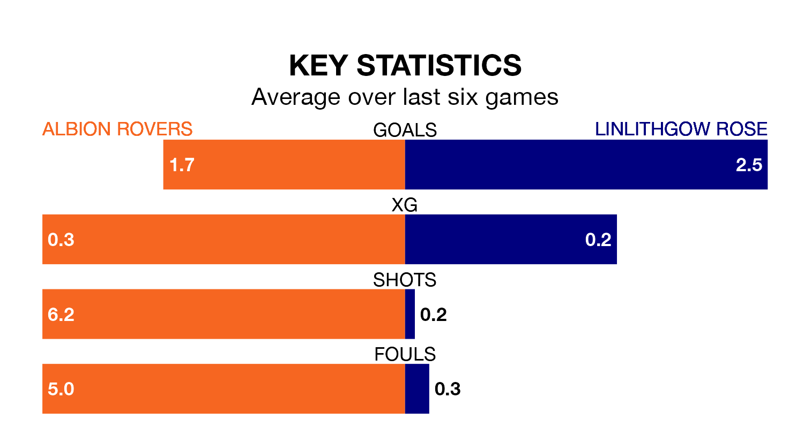

Two of Lowland Football League's meanest defences go head-to-head at the Reigart Stadium on Saturday, when Albion Rovers host Linlithgow Rose.
No teams have conceded fewer goals than Albion to date: the home side have let in just 19 goals in 18 games.
Linlithgow Rose have conceded 22 goals in 20 games, giving them the third tightest back line so far this season.
Albion are 14th in the table after 18 games, of which they have won seven and drawn five, earning 26 points.
Linlithgow Rose are seven places ahead of Rovers in seventh, with nine wins and seven draws putting them on 34 points.
The Wee Rovers are in mixed form in Lowland Football League, with three wins and a draw from their last six games.
With four wins and two draws over that period, the away team's form is better – they have taken 14 points from 18, compared to the hosts' 10.
Albion's last match was on January 13, a 1-1 draw against Edusport Academy.
Linlithgow Rose drew 1-1 with East Stirlingshire last time out, also on January 13.
Updated: 13:09 (UTC), 17/01/24